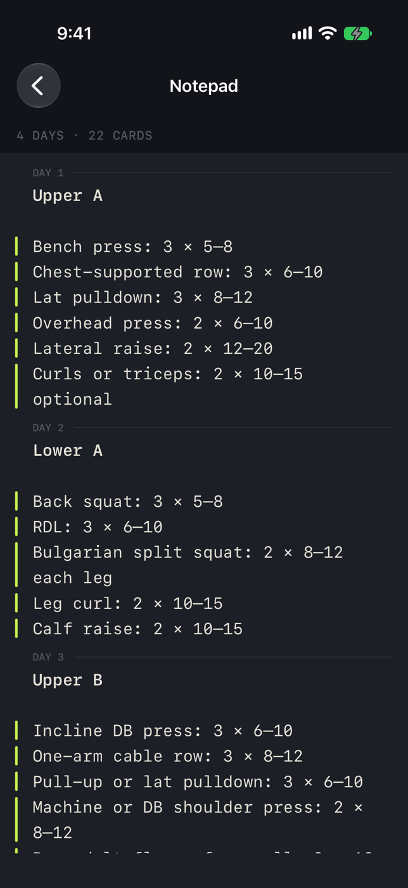
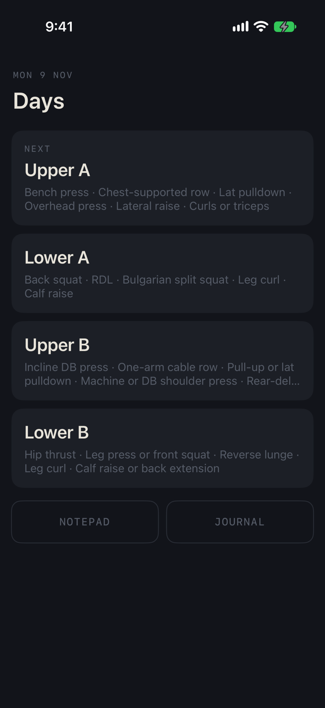
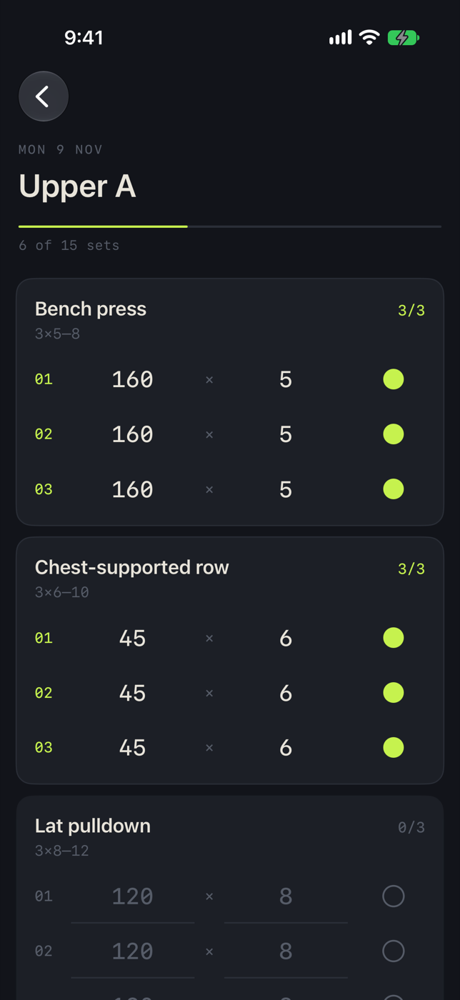
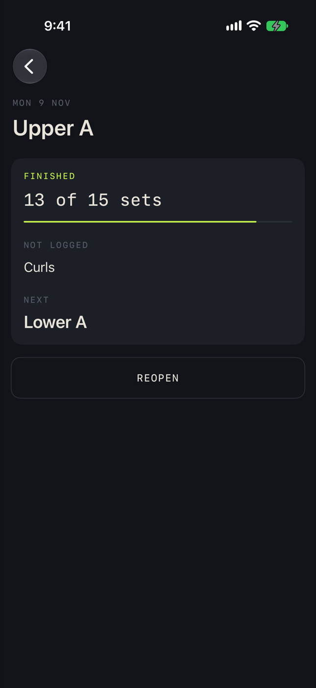
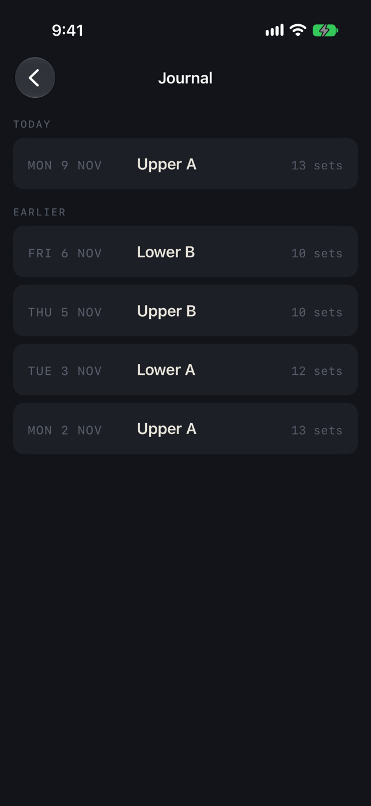

Lifting tracker
An iOS app that turns a workout plan, written as a plain note, into a one-tap logger.
I write my program as a note, the way I would in any notes app:
Bench press: 3 × 5–8. The app reads the note and gives each day its own
logging screen. Nothing to set up, and no exercise database to search.
During a workout, every set already shows what I lifted last time. If nothing changed, logging it is one tap. I type only the number that moved, and a new weight carries down to the rest of the sets.
After a session, a journal lists every workout by date, and each exercise keeps its own history.
Choices
- No rest timer and no time tracking. I time rest on my watch.
- No start button and no modes. A day closes when I tap Finish, or when the date changes.
- The app never rewrites the note. Everything it shows comes from the text as typed.
- Data stays on the phone, so no screen waits on a signal at the gym.
Stack
SwiftUI and SwiftData, iOS 17 and later. A Swift package holds the note parser and the store, with unit tests, and XCUITest covers the screens. The recording on this page comes from a UI test, so each build can reshoot it with one command.
Screens

The plan, as a note 
Days, next one first 
Logging, one tap per set 
Finished day 
Journal